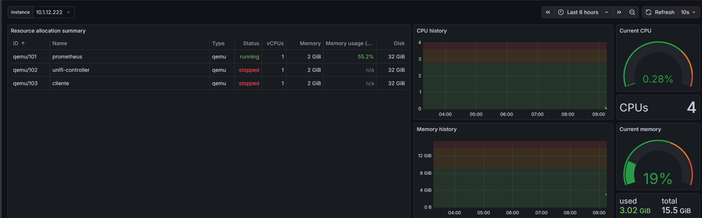

Prometheus + Grafana
Instale a stack de monitoramento completa usando Docker numa VM Ubuntu/Debian. O Prometheus coleta métricas e o Grafana exibe os dashboards.
Instale o Docker e o plugin Compose via apt.
sudo apt install -y docker.io docker-compose-v2
Inicie o Docker automaticamente no boot e permita rodar sem sudo.
sudo systemctl enable --now docker sudo usermod -aG docker $USER newgrp docker
mkdir -p ~/monitoramento/{prometheus,grafana} cd ~/monitoramento
global: scrape_interval: 15s scrape_configs: - job_name: 'prometheus' static_configs: - targets: ['localhost:9090']
version: "3.8" services: prometheus: image: prom/prometheus:latest container_name: prometheus volumes: - ./prometheus/prometheus.yml:/etc/prometheus/prometheus.yml:ro ports: - "9090:9090" restart: unless-stopped grafana: image: grafana/grafana:latest container_name: grafana environment: - GF_SECURITY_ADMIN_PASSWORD=admin volumes: - grafana_data:/var/lib/grafana ports: - "3000:3000" depends_on: - prometheus restart: unless-stopped volumes: grafana_data: {}
admin por algo mais seguro antes de usar em produção.docker compose up -d
Se a VM tiver UFW ativo, libere as portas do Grafana e do Prometheus.
sudo ufw allow 3000/tcp sudo ufw allow 9090/tcp
Acesse http://<IP_DA_VM>:3000 no navegador (login: admin / admin).
Navegue até Connections → Data sources → Add new data source → Prometheus.
Preencha a URL e salve.
http://:9090
Clique em Save & test. A mensagem de sucesso deve aparecer:
Monitorar o Proxmox com Prometheus
Crie um usuário dedicado no Proxmox com permissão de leitura, gere um API Token,
suba o pve-exporter via Docker e adicione os jobs no Prometheus.
No painel do Proxmox, navegue até:
Preencha o formulário com os seguintes dados:
User name : prometheus Realm : Proxmox VE authentication Password : (deixar em branco — acesso via token) Enabled : ✓
Ainda em Permissions, adicione uma permissão de usuário:
Path : / User : prometheus@pve Role : PVEAuditor Propagate : ✓
User : prometheus@pve Token ID : monitoring Privilege Separation: ☐ (desmarcado) Expire : never
Após criar, o Proxmox exibe o secret uma única vez. Guarde-o:
Token ID : prometheus@pve!monitoring Secret : xxxxxxxx-xxxx-xxxx-xxxx-xxxxxxxxxxxx
Crie a pasta e o arquivo de credenciais para o pve-exporter.
mkdir -p ~/monitoramento/pve nano ~/monitoramento/pve/pve.yml
default: user: prometheus@pam token_name: "exporter" token_value: "SEU_TOKEN_SECRET_AQUI" verify_ssl: false
Adicione o node_exporter (métricas da VM) e o proxmox_exporter (métricas do Proxmox).
version: "3.8" services: prometheus: image: prom/prometheus:latest container_name: prometheus volumes: - ./prometheus/prometheus.yml:/etc/prometheus/prometheus.yml:ro ports: - "9090:9090" restart: unless-stopped grafana: image: grafana/grafana:latest container_name: grafana environment: - GF_SECURITY_ADMIN_PASSWORD=admin volumes: - grafana_data:/var/lib/grafana ports: - "3000:3000" depends_on: - prometheus restart: unless-stopped node_exporter: image: quay.io/prometheus/node-exporter:latest container_name: node_exporter network_mode: host pid: host restart: unless-stopped proxmox_exporter: image: prompve/prometheus-pve-exporter:latest container_name: proxmox_exporter ports: - "9221:9221" restart: unless-stopped volumes: - ./pve/pve.yml:/etc/prometheus/pve.yml volumes: grafana_data: {} prometheus-data: {}
global: scrape_interval: 1m scrape_configs: # Prometheus em si - job_name: 'prometheus' static_configs: - targets: ['localhost:9090'] # Métricas da VM (node exporter) - job_name: 'node' static_configs: - targets: ['IP_DO_PROXMOX5:9100'] # IP da VM # Métricas do Proxmox via pve-exporter - job_name: 'pve' static_configs: - targets: - IP_DO_PROXMOX # IP do nó Proxmox metrics_path: /pve params: module: [default] relabel_configs: - source_labels: [__address__] target_label: __param_target - source_labels: [__param_target] target_label: instance - target_label: __address__ replacement: proxmox_exporter:9221
IP_DO_PROXMOX pelo IP real do seu nó Proxmox.docker compose up -d docker compose restart prometheus
Acesse http://<IP_DA_VM>:9090/targets e confirme que todos os jobs estão com status UP.
prometheus → http://prometheus:9090/metrics UP proxmox → http://pve-exporter:9221/metrics UP
No Grafana, navegue até Dashboards → New → Import. Digite o ID 10347 e clique em Load.
10347 — "Proxmox via Prometheus" por Pietro Saccardi
Na tela de importação, selecione o datasource prometheus no campo DS_PROMETHEUS e clique em Import.
